[11-3] 软件SPI读写W25Q64 — 学习笔记
- 课程：江协科技《STM32入门教程-2023版 细致讲解 中文字幕》
- 视频：BV1th411z7sn?p=38，55:06（3306 秒）
- 素材：254 帧关键帧（每 13 秒，宽 1280px）+ PP-OCRv4 画面硬字幕 OCR（953 段）；关键截图 18 张随笔记收录（源图在
vidsum_out/stm32_p38/frames/，站内图片在assets/images/stm32-38/） - 字幕情况：该集 B 站没有 CC/AI 字幕，文本由画面烧录的中文字幕 OCR 得到（source=subtitle-ocr）；错字主要是
SPI被识成「SPL/SP」（9 处）、读写→「卖写」（6 处）、寄存器→「奇存」、死循环→「死盾环」、引脚→「引I脚」，并混入编译输出（Objects\Project.axf、Flash Load finished at …）与行首噪声——这些不是口述内容，已剔除/校正（清单见文末「存疑」）。 - 本集定位：这是模块 11 的代码课（上）——用软件 SPI（GPIO 手动翻转）实现读写 W25Q64，分两层手写：通信层
MySPI（引脚封装、初始化、起始/终止/交换字节三个时序基本单元）+ 驱动层W25Q64（用通信层拼接0x9F/0x06/0x05/0x02/0x20/0x03各指令的完整时序），最后在 main 里做测试。结尾 54:30「本小节代码部分就到这里……下一小节学习 STM32 硬件 SPI 外设」——硬件 SPI 代码在 [11-4]。
一句话结论
工程准备：复制 OLED 工程改名 11-1 软件SPI读写W25Q64；接线 CS→PA4、DO→PA6、CLK→PA5、DI→PA7（软件 SPI 本可接任意 GPIO，但作者特意选在硬件 SPI1 的引脚上，方便以后切换到硬件 SPI，两种方式可任意切换）；注意 DO 是从机输出、要接主机输入（PA6 配上拉输入），CS/CLK/DI 是主机输出（推挽输出）。程序分两层：MySPI（通信层） = 通信引脚封装 + 初始化 + 起始/终止/交换字节三个基本单元；W25Q64（驱动层） = 调用通信层拼接各种指令的完整时序；main 只调驱动层。MySPI_Init：RCC_APB2PeriphClockCmd(RCC_APB2Periph_GPIOA, ENABLE) → Pin_4｜Pin_5｜Pin_7 配 GPIO_Mode_Out_PP（推挽输出）50MHz → Pin_6 配 GPIO_Mode_IPU（上拉输入）；初始化后还要设默认电平 MySPI_W_SS(1)、MySPI_W_SCK(0)（用模式 0 时 SCK 空闲为低；MOSI 无明确规定、MISO 是输入）。引脚封装：MySPI_W_SS/W_SCK/W_MOSI(uint8_t BitValue) = GPIO_WriteBit(GPIOA, GPIO_Pin_x, (BitAction)BitValue)、MySPI_R_MISO() = GPIO_ReadInputDataBit(GPIOA, GPIO_Pin_6)（用函数包装而不用宏，是为了以后移植/加延时方便）。起始/终止：MySPI_Start() = MySPI_W_SS(0)、MySPI_Stop() = MySPI_W_SS(1)。核心 MySPI_SwapByte（模式 0）：① 先 W_MOSI(ByteSend & 0x80) 把最高位放上 MOSI（此时 SCK 还是低） ② ByteSend <<= 1 ③ W_SCK(1) 产生上升沿（从机移入）④ if (R_MISO() == 1) ByteSend |= 0x01; 采样 MISO ⑤ W_SCK(0) 下降沿（移出下一位），循环 8 次返回 ByteSend——这就是移位法（原作者也演示了「掩码法」：ByteSend & (0x80 >> i) 发送、ByteReceive |= (0x80 >> i) 接收，两者等价，他保留了移位法，省一个变量）。四种模式的改法：模式 1 把 W_SCK(1) 提到移出数据之前（第 1 边沿移出、第 2 边沿移入）；模式 3 = 模式 1 的 SCK 极性取反；模式 2 = 模式 0 的 SCK 极性取反；本代码用模式 0。新建 W25Q64.c/h：W25Q64_Init() 只调用 MySPI_Init()；新建 W25Q64_Ins.h 把指令码做成宏（0x06 WRITE_ENABLE、0x05 READ_STATUS_REGISTER_1、0x02 PAGE_PROGRAM、0x20 SECTOR_ERASE_4KB、0x03 READ_DATA、0x9F JEDEC_ID，另有 W25Q64_DUMMY_BYTE 0xFF 作占位字节）；这样代码里不再出现「裸数字」，可读性大大提高。驱动层六个函数：ReadID(uint8_t *MID, uint16_t *DID) = Start → SwapByte(JEDEC_ID)（0x9F）→ *MID = SwapByte(DUMMY) → *DID = SwapByte(DUMMY) → *DID <<= 8 → *DID |= SwapByte(DUMMY) → Stop（现象 MID=EF、DID=4017，与手册对照一致，说明底层无误）；WriteEnable() = Start → SwapByte(WRITE_ENABLE) → Stop；WaitBusy() = Start → SwapByte(READ_STATUS_REGISTER_1)（0x05）→ while ((SwapByte(DUMMY_BYTE) & 0x01) == 0x01); 连续读状态寄存器最低位、BUSY=1 就一直等 → Stop（可加 uint32_t Timeout 超时 break）；PageProgram(uint32_t Address, uint8_t *DataArray, uint16_t Count) = WriteEnable() → Start → SwapByte(PAGE_PROGRAM) → 24 位地址（Address >> 16、Address >> 8、Address）→ for 循环逐字节 SwapByte(DataArray[i]) → Stop → WaitBusy()；SectorErase(uint32_t Address) = WriteEnable() → Start → SwapByte(SECTOR_ERASE_4KB) → 3 字节地址 → Stop → WaitBusy()（擦除该地址所在的整个 4KB 扇区）；ReadData(uint32_t Address, uint8_t *DataArray, uint32_t Count) = Start → SwapByte(READ_DATA)（0x03）→ 3 字节地址 → for 循环 DataArray[i] = SwapByte(DUMMY_BYTE)（发 0xFF 换回数据）→ Stop（读取可跨页、没有 256 字节限制，所以 Count 用 32 位）。写使能与忙等待的封装位置：每次写都得先写使能 → 直接放进 PageProgram/SectorErase 内部，调用时不用再管；忙等待有两种策略——事后等待（写入函数末尾 WaitBusy()，函数返回时芯片肯定不忙，最保险）与事前等待（写完后不等，等下次操作前再等，效率更高，可用其他代码消耗等待时间），作者选事后等待（ReadData 前后都不用等，因为耗时的写/擦操作后面已经等过）。main 测试：OLED_ShowString 显示 MID:/DID:/W:/R:，调用 ReadID 显示 ID，再依次 SectorErase(0x000000) → PageProgram(0x000000, ArrayWrite, 4) → ReadData(0x000000, ArrayRead, 4)，屏幕上 W: 与 R: 一致即读写正常（改数据 A1 B2 C3 D4 也能读回）。四组现象验证（本集精华）：① 读写一致（写入 01 02 03 04，读回同值）；② 掉电不丢失（注释掉擦除+写入再重新下载，读到的仍是旧数据）；③ 擦除后变 FF（只擦除不写入，读出全 F）；④ 不能非擦除覆盖（先写 AA BB CC DD，不擦除直接改写 55 66 77 88，读出来是 00 22 44 88——因为「读出的数据 = 原始数据 & 写入的数据」，1 只能改 0）；⑤ 不能跨页写（从地址 0x0000FF 起写 4 字节 55 66 77 88，读回 55 FF FF FF——因为写入不跨页，55 落在 0x0000FF、后 3 个数据回到页首 0x000100 起的第 2 页（那里是擦除后的 FF），而读取可以跨页，所以能读到第 2 页的 FF）。最后作者说跨页写要自己写软件实现（算要跨几页、该擦的擦、分批次写），留作进阶作业。
0. 本集定位：代码课（通信层 + 驱动层两层手写）
- 本集是模块 11 的第一个代码课，全程用软件 SPI（GPIO 手动翻转引脚）实现，不使用 STM32 的 SPI 外设；
- 代码在 [11-4] 才改为硬件 SPI 外设（下一节学习）；
- 片尾 54:30：「本小节我们的代码部分到这里就要结束了……下一小节开始学习 STM32 的硬件 SPI 外设，用硬件 SPI 的方式实现同样的功能」。
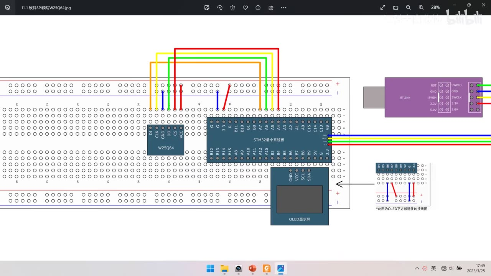
图 1：接线图 11-1 软件SPI读写W25Q64——W25Q64 模块（DI/CLK/GND/DO/CS/VCC）插在面包板上，与 STM32 最小系统板用 4 根飞线相连：CS→PA4、DO→PA6、CLK→PA5、DI→PA7，另有 VCC/GND 供电；右下角注明 *此图为OLED下方被遮挡的接线图；字幕「看一下」
1. 接线与工程准备
- 接法：模块 VCC/GND 供电；CS（片选）→ PA4、DO（从机输出、MISO）→ PA6、CLK（SCK）→ PA5、DI（从机输入、MOSI）→ PA7；
- 软件 SPI 的引脚本可以任意选，但作者特意接在硬件 SPI1 的引脚上（PA4～PA7 正是 SPI1 的 NSS/SCK/MISO/MOSI）——这样软件 SPI 和硬件 SPI 可以任意切换，「接到硬件 SPI 脚上是最好的」；
- 面包板接线：模块插在面包板合适位置，VCC 用跳线引到正极供电孔、GND 引到负极，4 根飞线按上表连接；上电后模块电源指示灯点亮，说明供电正常；
- 工程：复制 OLED 显示屏工程 → 改名
11-1 软件SPI读写W25Q64→ 打开、把 OLED 测试代码删掉、先编译一遍。
2. 程序整体框架：通信层 + 驱动层
MySPI模块（SPI 通信层）：通信引脚封装 + 初始化 + SPI 通信的 3 个时序基本单元（起始、终止、交换字节）；W25Q64模块（W25Q64 硬件驱动层）：基于 SPI 层，调用底层的时序基本单元，拼接各种指令和功能的完整时序；- main：调用驱动层的函数完成想要的功能；
- 在 Hardware 目录下新建
MySPI.c/h，然后W25Q64.c/h、W25Q64_Ins.h。
3. MySPI 通信层
3.1 MySPI_Init
void MySPI_Init(void)
{
RCC_APB2PeriphClockCmd(RCC_APB2Periph_GPIOA, ENABLE);
GPIO_InitTypeDef GPIO_InitStructure;
GPIO_InitStructure.GPIO_Mode = GPIO_Mode_Out_PP; /* 推挽输出 */
GPIO_InitStructure.GPIO_Pin = GPIO_Pin_4 | GPIO_Pin_5 | GPIO_Pin_7;
GPIO_InitStructure.GPIO_Speed = GPIO_Speed_50MHz;
GPIO_Init(GPIOA, &GPIO_InitStructure);
GPIO_InitStructure.GPIO_Mode = GPIO_Mode_IPU; /* 上拉输入 */
GPIO_InitStructure.GPIO_Pin = GPIO_Pin_6;
GPIO_InitStructure.GPIO_Speed = GPIO_Speed_50MHz;
GPIO_Init(GPIOA, &GPIO_InitStructure);
MySPI_W_SS(1); /* 片选默认高（不选中） */
MySPI_W_SCK(0); /* 模式 0：空闲 SCK 为低 */
}
- 为什么这么配（对照上一集的硬件规定）：对主机来说，时钟（SCK）、主机输出（MOSI）、片选（SS）都是输出引脚 → 推挽输出；主机输入（MISO）是输入引脚 → 上拉输入（浮空也可以，上拉更稳）；
- 注意引脚对应：PA4=CS、PA5=SCK(CLK)、PA6=MISO(DO)、PA7=MOSI(DI)——所以 Pin_4｜Pin_5｜Pin_7 推挽输出、Pin_6 上拉输入；
- 默认电平：
W_SS(1)（片选不选中）、W_SCK(0)（模式 0 空闲低）；MOSI 没有明确规定的默认电平，可以不管；MISO 是输入，不需要输出。
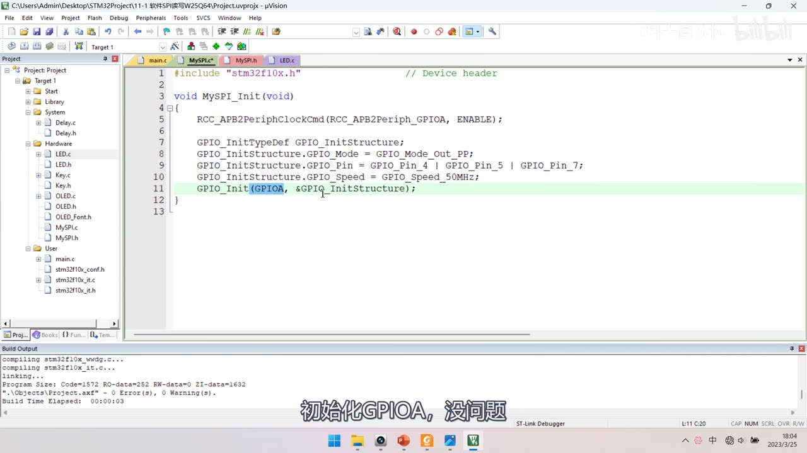
图 2：MySPI.c 的 MySPI_Init 前半段——RCC_APB2PeriphClockCmd(RCC_APB2Periph_GPIOA, ENABLE);、GPIO_InitTypeDef GPIO_InitStructure;、GPIO_Mode = GPIO_Mode_Out_PP;、GPIO_Pin = GPIO_Pin_4 | GPIO_Pin_5 | GPIO_Pin_7;、GPIO_Speed = GPIO_Speed_50MHz;、GPIO_Init(GPIOA, &GPIO_InitStructure);，工程树 Hardware 下已建 MySPI.c/h；字幕「初始化GPIOA，没问题」
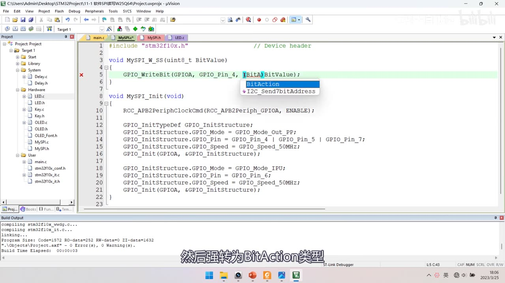
图 3：MySPI.c 的引脚封装与 MySPI_Init 后半段——void MySPI_W_SS(uint8_t BitValue) { GPIO_WriteBit(GPIOA, GPIO_Pin_4, (BitAction)BitValue); }（提示框显示 BitAction），下面 MySPI_Init 里先推挽输出段、再 IPU 段（GPIO_Mode_IPU、GPIO_Pin_6、50MHz、GPIO_Init）；字幕「然后强转为BitAction类型」
3.2 引脚封装函数
void MySPI_W_SS(uint8_t BitValue) { GPIO_WriteBit(GPIOA, GPIO_Pin_4, (BitAction)BitValue); }
void MySPI_W_SCK(uint8_t BitValue) { GPIO_WriteBit(GPIOA, GPIO_Pin_5, (BitAction)BitValue); }
void MySPI_W_MOSI(uint8_t BitValue) { GPIO_WriteBit(GPIOA, GPIO_Pin_7, (BitAction)BitValue); }
uint8_t MySPI_R_MISO(void) { return GPIO_ReadInputDataBit(GPIOA, GPIO_Pin_6); }
- 命名：SS 也可以叫 CS（两种叫法都很常见）；SCK 对应 CLK、MOSI 对应 DI、MISO 对应 DO；
- 为什么用函数而不用宏：作者说用宏也能完成相同功能，但函数包装在移植到其他单片机时更方便（比如以后要加延时）；
GPIO_WriteBit第三个参数要强转(BitAction)（BitValue是uint8_t，函数要BitAction类型）。
3.3 起始与终止
void MySPI_Start(void) { MySPI_W_SS(0); } /* SS 高→低：起始 */
void MySPI_Stop(void) { MySPI_W_SS(1); } /* SS 低→高：终止 */
- 正好对应上一集 PPT：起始条件＝SS 从高电平切换到低电平、终止条件＝SS 从低电平切换到高电平；
- 就是拉低/拉高片选，没有别的动作。
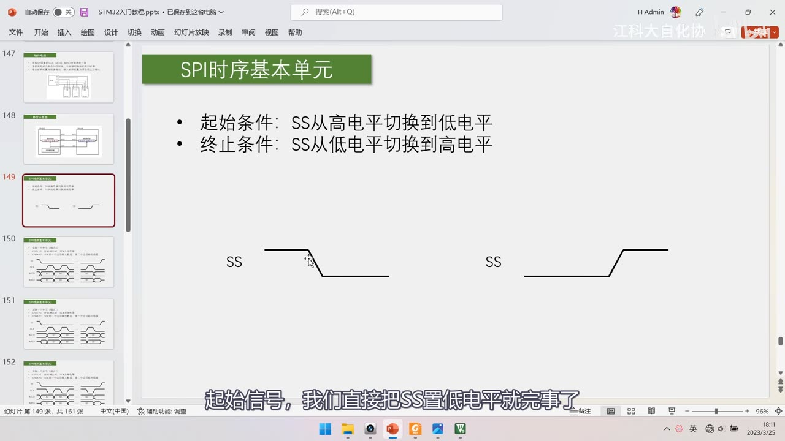
图 4：PPT「SPI时序基本单元」——起始条件：SS 从高电平切换到低电平；终止条件：SS 从低电平切换到高电平；下方是 SS 的下降沿/上升沿波形；字幕「起始信号，我们直接把SS置低电平就完事了」
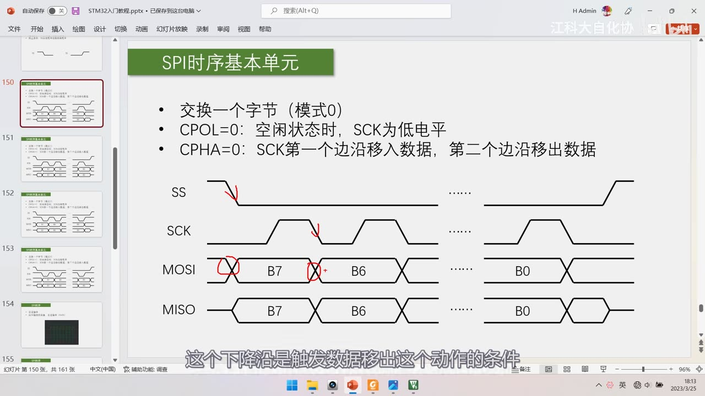
图 5：PPT 模式 0 时序图 + 红笔标注——SS 下降沿处画红勾、SCK 下降沿画红箭头（下降沿是触发移出数据的条件）、MOSI 上 B7→B6 的转折处画红圈（数据在下降沿变化）；字幕「这个下降沿是触发数据移出这个动作的条件」
3.4 核心：MySPI_SwapByte（模式 0）
uint8_t MySPI_SwapByte(uint8_t ByteSend)
{
uint8_t i;
for (i = 0; i < 8; i ++)
{
MySPI_W_MOSI(ByteSend & 0x80); /* 先移出最高位（此时 SCK 为低） */
ByteSend <<= 1;
MySPI_W_SCK(1); /* 上升沿：从机移入 */
if (MySPI_R_MISO() == 1) { ByteSend |= 0x01; } /* 采样 MISO */
MySPI_W_SCK(0); /* 下降沿：移出下一位 */
}
return ByteSend;
}
- 思路来自模式 0 时序图：SS 下降沿之后，先移出 B7（MOSI 变化）→ SCK 上升沿从机移入 → SCK 下降沿移出 B6 → ……；
- 「同时发生」怎么用软件实现：硬件里「移出/移入」是同时的，软件 SPI 只能按先后顺序写——「SCK 下降沿」是移出数据的触发条件，所以先改 MOSI 再拉高 SCK（对应模式 0 第 1 边沿移入、第 2 边沿移出）；
- 两种等价写法：
- 掩码法：
MySPI_W_MOSI(ByteSend & (0x80 >> i));、if (MySPI_R_MISO() == 1) { ByteReceive |= (0x80 >> i); }，循环 8 次，返回ByteReceive——要两个变量； - 移位法（本代码采用）：
ByteSend <<= 1，收到 1 就把最低位置 1——省一个变量、效率更高，代价是改变了入参（ByteSend被移没了）； - 作者说：「使用哪种都可以，看你的喜好」。
- 掩码法：
- 四种模式的改法（只需改
SwapByte里的 SCK 时机与极性）：- 模式 1（CPOL=0、CPHA=1）：把
MySPI_W_SCK(1)提到移出数据之前（第 1 边沿移出、第 2 边沿移入，即先从低到高、再移出、再拉低时采样）； - 模式 3：模式 1 的 SCK 极性取反（空闲高）；
- 模式 2：模式 0 的 SCK 极性取反（空闲高）；
- 本代码用模式 0。
- 模式 1（CPOL=0、CPHA=1）：把
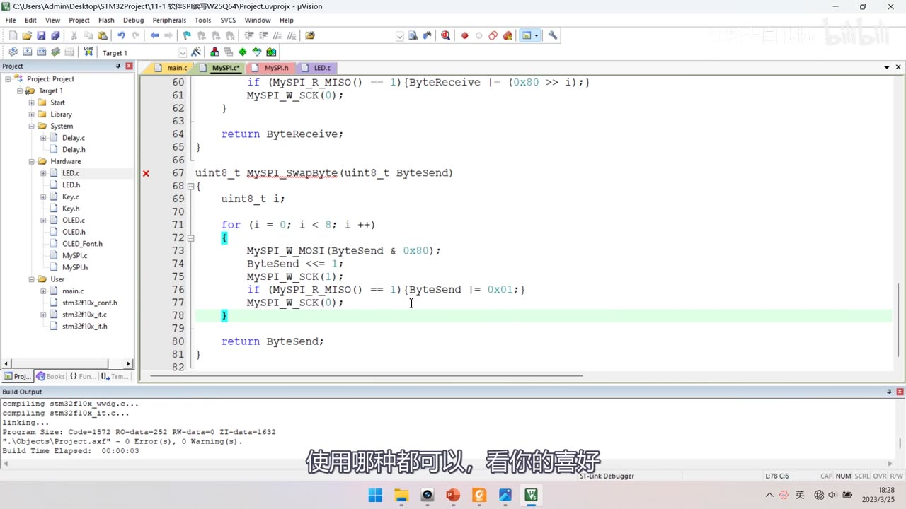
图 6：MySPI.c 的 MySPI_SwapByte（移位法）——for (i = 0; i < 8; i ++) { MySPI_W_MOSI(ByteSend & 0x80); ByteSend <<= 1; MySPI_W_SCK(1); if (MySPI_R_MISO() == 1) { ByteSend |= 0x01; } MySPI_W_SCK(0); }、return ByteSend;；上方还留着掩码法版本的尾部（ByteReceive |= (0x80 >> i)）；字幕「使用哪种都可以，看你的喜好」
3.5 编译坑：头文件防重复包含
- 新建
W25Q64.c后编译，出现 2 个错误：Hardware\MySPI.h(9): error: #1-D: unrecognized preprocessing directiveHardware\MySPI.h(9): error: #37: the #endif for this directive is missing
- 原因是头文件里的
#ifndef/#define/#endif（防止重复包含）写错了（#ifndef后面多/少字符导致预处理指令无法识别）； - 修正
MySPI.h的#ifndef MySPI_H/#define MySPI_H/#endif后编译通过——本集唯一的编译坑。
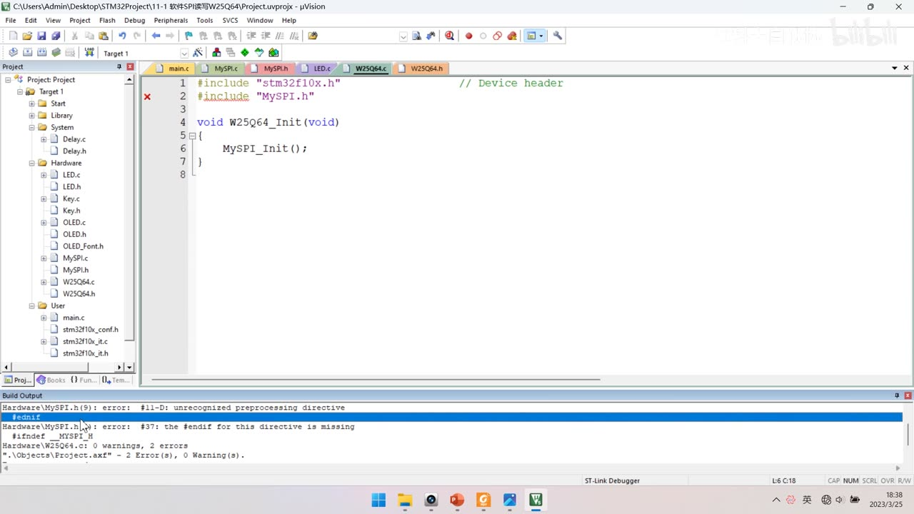
图 7：编译报错现场——W25Q64.c 里只有 #include "stm32f10x.h"、#include "MySPI.h"、void W25Q64_Init(void) { MySPI_Init(); }；下方错误窗口：Hardware\MySPI.h(9): error: #1-D: unrecognized preprocessing directive、Hardware\MySPI.h(9): error: #37: the #endif for this directive is missing，2 Error(s)
4. W25Q64 驱动层
4.1 W25Q64_Ins.h：把指令码做成宏
- 直接写
SwapByte(0x9F)这种「裸数字」，别人看不出含义、可读性差（就像 MPU6050 的寄存器地址一样）——所以把每个指令码用#define换成名字； - 作者提前写好了整个指令集（含本课程不用的 Quad/Fast Read 系列），本课程真正用到的只有 6 个 + 1 个占位字节：
| 宏名 | 指令码 | 用途 |
|---|---|---|
W25Q64_WRITE_ENABLE |
0x06 | 写使能（每次写/擦前） |
W25Q64_READ_STATUS_REGISTER_1 |
0x05 | 读状态寄存器 1（看 BUSY） |
W25Q64_PAGE_PROGRAM |
0x02 | 页编程（+24 位地址+数据） |
W25Q64_SECTOR_ERASE_4KB |
0x20 | 扇区擦除 4KB（+24 位地址） |
W25Q64_READ_DATA |
0x03 | 读数据（+24 位地址，之后连续读） |
W25Q64_JEDEC_ID |
0x9F | 读 JEDEC ID（读 MID/DID） |
W25Q64_DUMMY_BYTE |
0xFF | 占位字节：接收时交换过去的无用数据 |
- 替换后代码里就是
MySPI_SwapByte(W25Q64_JEDEC_ID)、MySPI_SwapByte(W25Q64_DUMMY_BYTE)这种形式，「一眼看出来这是读 ID 的指令」。
![图 8：手册「11.2.2 Instruction Set Table 1」表格（本集对照用）——Write Enable 06h、Write Disable 04h、Read Status Register-1 05h（S7-S0）、Read Status Register-2 35h、Write Status Register 01h、Page Program 02h（A23-A16/A15-A8/A7-A0/D7-D0）、Quad Page Program 32h、Block Erase(64KB) D8h、Block Erase(32KB) 52h、Sector Erase(4KB) 20h、Chip Erase C7h/60h、Erase Suspend 75h、Erase Resume 7Ah、Power-down B9h、High Performance Mode A3h、Continuous Read Mode Reset FFh、Release Power down/HPM/Device ID ABh、Manufacturer/Device ID 90h、Read Unique ID 4Bh、JEDEC ID 9Fh（MF7-MF0/ID15-ID8/ID7-ID0/Capacity）；字幕「第一个字节是厂商ID，表示了是哪个厂家生产的」](../assets/images/stm32-38/08-instruction-table.jpg)
图 8：手册「11.2.2 Instruction Set Table 1」表格（本集对照用）——Write Enable 06h、Write Disable 04h、Read Status Register-1 05h（S7-S0）、Read Status Register-2 35h、Write Status Register 01h、Page Program 02h（A23-A16/A15-A8/A7-A0/D7-D0）、Quad Page Program 32h、Block Erase(64KB) D8h、Block Erase(32KB) 52h、Sector Erase(4KB) 20h、Chip Erase C7h/60h、Erase Suspend 75h、Erase Resume 7Ah、Power-down B9h、High Performance Mode A3h、Continuous Read Mode Reset FFh、Release Power down/HPM/Device ID ABh、Manufacturer/Device ID 90h、Read Unique ID 4Bh、JEDEC ID 9Fh（MF7-MF0/ID15-ID8/ID7-ID0/Capacity）；字幕「第一个字节是厂商ID，表示了是哪个厂家生产的」
![图 9：记事本里的 W25Q64_Ins.txt（指令宏定义全表）——#define W25Q64_WRITE_ENABLE 0x06、W25Q64_WRITE_DISABLE 0x04、W25Q64_READ_STATUS_REGISTER_1 0x05、W25Q64_READ_STATUS_REGISTER_2 0x35、W25Q64_WRITE_STATUS_REGISTER 0x01、W25Q64_PAGE_PROGRAM 0x02、W25Q64_QUAD_PAGE_PROGRAM 0x32、W25Q64_BLOCK_ERASE_64KB 0xD8、W25Q64_BLOCK_ERASE_32KB 0x52、W25Q64_SECTOR_ERASE_4KB 0x20、W25Q64_CHIP_ERASE 0xC7、W25Q64_ERASE_SUSPEND 0x75、W25Q64_ERASE_RESUME 0x7A、W25Q64_POWER_DOWN 0xB9、W25Q64_HIGH_PERFORMANCE_MODE 0xA3、W25Q64_CONTINUOUS_READ_MODE_RESET 0xFF、W25Q64_RELEASE_POWER_DOWN_HPM_DEVICE_ID 0xAB、W25Q64_MANUFACTURER_DEVICE_ID 0x90、W25Q64_READ_UNIQUE_ID 0x4B、W25Q64_JEDEC_ID 0x9F、W25Q64_READ_DATA 0x03、Fast Read 系列 0x0B/0x3B/0xBB/0x6B/0xEB/0xE3、#define W25Q64_DUMMY_BYTE 0xFF；字幕「就是这个样子」](../assets/images/stm32-38/10-ins-h-macros.jpg)
图 9：记事本里的 W25Q64_Ins.txt（指令宏定义全表）——#define W25Q64_WRITE_ENABLE 0x06、W25Q64_WRITE_DISABLE 0x04、W25Q64_READ_STATUS_REGISTER_1 0x05、W25Q64_READ_STATUS_REGISTER_2 0x35、W25Q64_WRITE_STATUS_REGISTER 0x01、W25Q64_PAGE_PROGRAM 0x02、W25Q64_QUAD_PAGE_PROGRAM 0x32、W25Q64_BLOCK_ERASE_64KB 0xD8、W25Q64_BLOCK_ERASE_32KB 0x52、W25Q64_SECTOR_ERASE_4KB 0x20、W25Q64_CHIP_ERASE 0xC7、W25Q64_ERASE_SUSPEND 0x75、W25Q64_ERASE_RESUME 0x7A、W25Q64_POWER_DOWN 0xB9、W25Q64_HIGH_PERFORMANCE_MODE 0xA3、W25Q64_CONTINUOUS_READ_MODE_RESET 0xFF、W25Q64_RELEASE_POWER_DOWN_HPM_DEVICE_ID 0xAB、W25Q64_MANUFACTURER_DEVICE_ID 0x90、W25Q64_READ_UNIQUE_ID 0x4B、W25Q64_JEDEC_ID 0x9F、W25Q64_READ_DATA 0x03、Fast Read 系列 0x0B/0x3B/0xBB/0x6B/0xEB/0xE3、#define W25Q64_DUMMY_BYTE 0xFF；字幕「就是这个样子」

图 10：main.c 调用 ReadID——#include "stm32f10x.h"、#include "Delay.h"、#include "OLED.h"、#include "W25Q64.h"；全局 uint8_t MID; uint16_t DID;；main 里 OLED_Init(); W25Q64_Init(); W25Q64_ReadID(&MID, &DID); while (1) {}（提示框显示原型 void W25Q64_ReadID(uint8_t *MID, uint16_t *DID)）；字幕「把两个变量的地址，传递进去」
4.2 W25Q64_ReadID
void W25Q64_ReadID(uint8_t *MID, uint16_t *DID)
{
MySPI_Start();
MySPI_SwapByte(W25Q64_JEDEC_ID); /* 0x9F */
*MID = MySPI_SwapByte(W25Q64_DUMMY_BYTE); /* 厂商 ID */
*DID = MySPI_SwapByte(W25Q64_DUMMY_BYTE); /* 设备 ID 高字节 */
*DID <<= 8;
*DID |= MySPI_SwapByte(W25Q64_DUMMY_BYTE); /* 设备 ID 低字节 */
MySPI_Stop();
}
0x9F是 JEDEC ID 指令：之后连续交换会依次返回 厂商 ID + 设备 ID（2 字节）；*DID是 16 位：读两个字节后先左移 8 位再或上第二个字节；- 占位字节用
W25Q64_DUMMY_BYTE（0xFF）——因为接收时必须「发一个字节换一个字节」； - 现象：OLED 显示 MID = EF、DID = 4017，与手册的 ID 表对照一致（
0x9F读出来是 4017），说明底层 SPI 通信没问题。
4.3 W25Q64_WriteEnable / W25Q64_WaitBusy
void W25Q64_WriteEnable(void)
{
MySPI_Start();
MySPI_SwapByte(W25Q64_WRITE_ENABLE); /* 0x06 */
MySPI_Stop();
}
void W25Q64_WaitBusy(void)
{
MySPI_Start();
MySPI_SwapByte(W25Q64_READ_STATUS_REGISTER_1); /* 0x05 */
while ((MySPI_SwapByte(W25Q64_DUMMY_BYTE) & 0x01) == 0x01); /* BUSY=1 一直等 */
MySPI_Stop();
}
- 写使能
0x06：起始 → 交换发送0x06→ 直接停止（这条指令后面不需要跟任何数据）； WaitBusy利用了「状态寄存器可连续读出」的特性：起始 → 发0x05→ 连续交换接收状态寄存器，用掩码取出最低位 BUSY，== 0x01说明 BUSY=1（在忙）就 while 死循环等待，直到 BUSY=0 才跳出、再 Stop；- 作者提醒给前面的计算套上括号，避免
&与==的优先级问题； - 如果怕死循环卡死，可以加
Timeout：uint32_t Timeout = 100000;（初始值自己实测、给大一点），在 while 里Timeout --;，减到 0 就break超时退出；break 之前也可以跳到自定义错误处理函数（看需求）。
- 作者提醒给前面的计算套上括号，避免
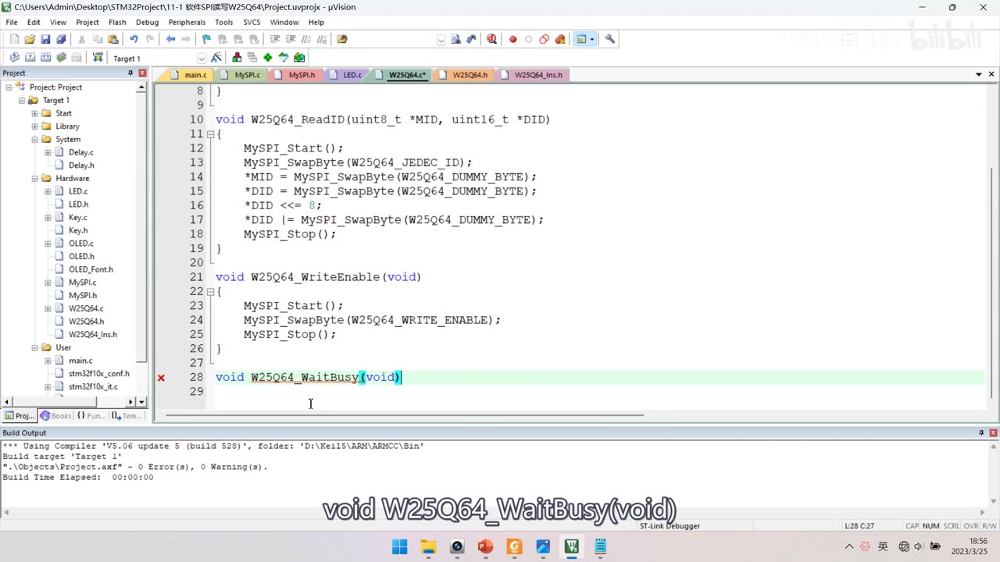
图 11：W25Q64.c 的 ReadID 与 WriteEnable——void W25Q64_ReadID(uint8_t *MID, uint16_t *DID)：MySPI_Start(); MySPI_SwapByte(W25Q64_JEDEC_ID); *MID = MySPI_SwapByte(W25Q64_DUMMY_BYTE); *DID = MySPI_SwapByte(W25Q64_DUMMY_BYTE); *DID <<= 8; *DID |= MySPI_SwapByte(W25Q64_DUMMY_BYTE); MySPI_Stop();；void W25Q64_WriteEnable(void)：MySPI_Start(); MySPI_SwapByte(W25Q64_WRITE_ENABLE); MySPI_Stop();；第 28 行开始 void W25Q64_WaitBusy(void)；字幕「void W25Q64_WaitBusy(void)」
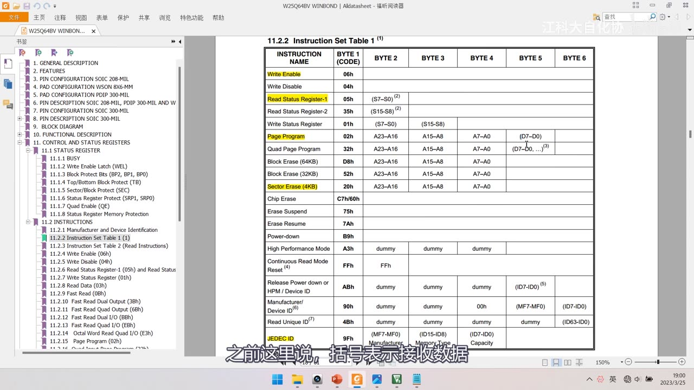
图 12：手册指令集表（黄笔标注版）——Write Enable 06h、Read Status Register-1 05h、Page Program 02h、Sector Erase(4KB) 20h、JEDEC ID 9Fh 等被黄色高亮，对应本集要实现/用到的指令；字幕「之前这里说，括号表示读取数据」
4.4 W25Q64_PageProgram
void W25Q64_PageProgram(uint32_t Address, uint8_t *DataArray, uint16_t Count)
{
uint16_t i;
W25Q64_WriteEnable(); /* 写前必须写使能 */
MySPI_Start();
MySPI_SwapByte(W25Q64_PAGE_PROGRAM); /* 0x02 */
MySPI_SwapByte(Address >> 16); /* 24 位地址：高字节 */
MySPI_SwapByte(Address >> 8); /* 中字节 */
MySPI_SwapByte(Address); /* 低字节（自动截断） */
for (i = 0; i < Count; i ++)
{
MySPI_SwapByte(DataArray[i]); /* 逐字节发数据 */
}
MySPI_Stop();
W25Q64_WaitBusy(); /* 事后等待 */
}
- 参数用
uint32_t Address：C 语言没有 24 位数据类型，发地址时靠右移分别取高/中/低字节（>>16、>>8、直接传）； - 数据用指针
uint8_t *DataArray+uint16_t Count：因为一般要写多个字节，数组要通过指针传递； Count必须是 16 位：页编程一次最多 0～256 字节，若用 8 位只能表示 0～255，写 256 个字节时会出问题；WriteEnable()写在函数内部，调用者不用每次自己加。
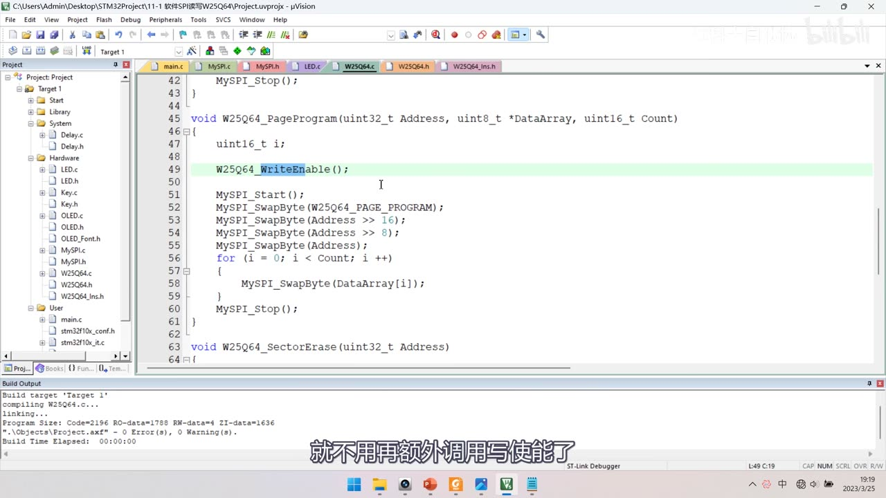
图 13：W25Q64.c 的 PageProgram 完整代码——void W25Q64_PageProgram(uint32_t Address, uint8_t *DataArray, uint16_t Count)：uint16_t i;、W25Q64_WriteEnable();、MySPI_Start();、MySPI_SwapByte(W25Q64_PAGE_PROGRAM);、MySPI_SwapByte(Address >> 16);、MySPI_SwapByte(Address >> 8);、MySPI_SwapByte(Address);、for (i = 0; i < Count; i ++) { MySPI_SwapByte(DataArray[i]); }、MySPI_Stop();，下面是 void W25Q64_SectorErase(uint32_t Address)；字幕「就不用再额外调用写使能了」
4.5 W25Q64_SectorErase
void W25Q64_SectorErase(uint32_t Address)
{
W25Q64_WriteEnable();
MySPI_Start();
MySPI_SwapByte(W25Q64_SECTOR_ERASE_4KB); /* 0x20 */
MySPI_SwapByte(Address >> 16);
MySPI_SwapByte(Address >> 8);
MySPI_SwapByte(Address);
MySPI_Stop();
W25Q64_WaitBusy();
}
- 和页编程几乎一样，只是指令码换成
0x20、后面不跟数据； - 擦除的是「该地址所在的整个 4KB 扇区」，其他擦除指令（块擦除/整片擦除）写法类似；
- 擦除比写入慢，所以后面一定要有
WaitBusy()。
4.6 W25Q64_ReadData
void W25Q64_ReadData(uint32_t Address, uint8_t *DataArray, uint32_t Count)
{
uint32_t i;
MySPI_Start();
MySPI_SwapByte(W25Q64_READ_DATA); /* 0x03 */
MySPI_SwapByte(Address >> 16);
MySPI_SwapByte(Address >> 8);
MySPI_SwapByte(Address);
for (i = 0; i < Count; i ++)
{
DataArray[i] = MySPI_SwapByte(W25Q64_DUMMY_BYTE); /* 发 0xFF 换回数据 */
}
MySPI_Stop();
}
- 结构与写类似：指令码 + 24 位地址，然后逐字节「发占位字节换回数据」；
- 每次交换读取之后，芯片内部地址指针自动自增，所以能依次返回指定地址开始、往后线性区域的数据；
- 读取没有 256 字节的页限制，所以
Count用uint32_t（16 位最大 65535 可能不够）； - 读之前不需要写使能，读完也不会有忙状态（相对宽松）。
![图 14：W25Q64.c 的 SectorErase 与 ReadData 开头——void W25Q64_SectorErase(uint32_t Address)：W25Q64_WriteEnable(); MySPI_Start(); MySPI_SwapByte(W25Q64_SECTOR_ERASE_4KB); MySPI_SwapByte(Address >> 16); MySPI_SwapByte(Address >> 8); MySPI_SwapByte(Address); MySPI_Stop(); W25Q64_WaitBusy();；下面 void W25Q64_ReadData(uint32_t Address, uint8_t *DataArray, uint32_t Count)：uint32_t i; MySPI_Start(); MySPI_SwapByte(W25Q64_READ_DATA); MySPI_SwapByte(Address >> 16); MySPI_SwapByte(Address >> 8);；字幕「所以调用ReadData时，肯定不会忙」](../assets/images/stm32-38/14-sectorerase-readdata.jpg)
图 14：W25Q64.c 的 SectorErase 与 ReadData 开头——void W25Q64_SectorErase(uint32_t Address)：W25Q64_WriteEnable(); MySPI_Start(); MySPI_SwapByte(W25Q64_SECTOR_ERASE_4KB); MySPI_SwapByte(Address >> 16); MySPI_SwapByte(Address >> 8); MySPI_SwapByte(Address); MySPI_Stop(); W25Q64_WaitBusy();；下面 void W25Q64_ReadData(uint32_t Address, uint8_t *DataArray, uint32_t Count)：uint32_t i; MySPI_Start(); MySPI_SwapByte(W25Q64_READ_DATA); MySPI_SwapByte(Address >> 16); MySPI_SwapByte(Address >> 8);；字幕「所以调用ReadData时，肯定不会忙」
5. 写使能与忙等待：放在哪里？
- 写使能：涉及写入的时序只有扇区擦除和页编程，而每次写入前都必须写使能 → 直接把
W25Q64_WriteEnable()放进这两个函数开头，调用时不用再自己加；- 写使能只对紧跟其后的一条时序有效，写操作完成后芯片会「顺手关门」（WEL 自动清 0），所以写完不需要再写失能；
- 忙等待的两种策略：
- 事后等待：每次写入后立刻
WaitBusy()，不忙了才退出函数——函数之外芯片肯定不忙，最保险； - 事前等待：写完不等，下次操作之前再等——效率更高（写完可以先去执行其他代码，用这段时间消耗等待），但要注意读取之前也得等（忙的时候读取也不行）；
- 作者选事后等待：在
PageProgram、SectorErase末尾各调用一次WaitBusy()；ReadData前后都不用等（因为耗时的写/擦操作后面都已经等过，调用 ReadData 时肯定不忙）。
- 事后等待：每次写入后立刻
6. main 测试与现象验证
6.1 main 代码
uint8_t MID;
uint16_t DID;
uint8_t ArrayWrite[] = {0x01, 0x02, 0x03, 0x04};
uint8_t ArrayRead[4];
int main(void)
{
OLED_Init();
W25Q64_Init();
OLED_ShowString(1, 1, "MID: DID:");
OLED_ShowString(2, 1, "W:");
OLED_ShowString(3, 1, "R:");
W25Q64_ReadID(&MID, &DID); /* 读 ID 先验证底层 */
OLED_ShowHexNum(1, 5, MID, 2); /* MID 显示在 5 列 */
OLED_ShowHexNum(1, 12, DID, 4); /* DID 显示在 12 列 */
W25Q64_SectorErase(0x000000); /* 写之前先擦除扇区 */
W25Q64_PageProgram(0x000000, ArrayWrite, 4);
W25Q64_ReadData(0x000000, ArrayRead, 4);
OLED_ShowHexNum(2, 3, ArrayWrite[0], 2); /* W: 显示写入的数据 */
OLED_ShowHexNum(2, 6, ArrayWrite[1], 2);
OLED_ShowHexNum(2, 9, ArrayWrite[2], 2);
OLED_ShowHexNum(2, 12, ArrayWrite[3], 2);
/* R: 同样方式显示 ArrayRead[0..3] */
while (1)
{
}
}
- 先读 ID 验证底层再往下写：作者强调「先确保之前的代码没问题，再往后写，这样写程序心里才有底」；
- 地址对齐：擦除虽然精确到字节，但最好把地址对齐到扇区起始地址——上一集总结过规律：每个扇区地址是
xxx000～xxxFFF，所以只要末尾 3 个十六进制数是 0，就是扇区起始地址；后 3 位是扇区内地址，随便写； - 页地址规律：页地址范围是
xxxx00～xxxxFF，最后两个十六进制数是页内地址，前面是页地址。
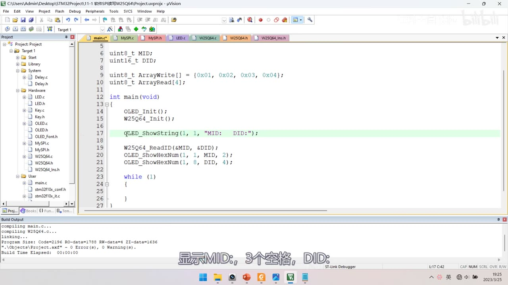
图 15：main.c 显示 ID——OLED_ShowString(1, 1, "MID: DID:");、W25Q64_ReadID(&MID, &DID);、OLED_ShowHexNum(1, 1, MID, 2);、OLED_ShowHexNum(1, 8, DID, 4);（早期版列号）；字幕「显示MID，3个空格，DID:」
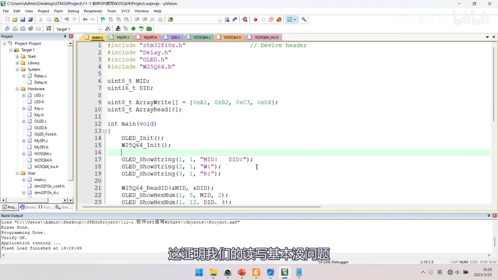
图 16：main.c 完整测试流程——ArrayWrite[] = {0xA1, 0xB2, 0xC3, 0xD4};、ArrayRead[4];、OLED_ShowString(1,1,"MID: DID:")、(2,1,"W:")、(3,1,"R:")、W25Q64_ReadID(&MID,&DID)、OLED_ShowHexNum(1,5,MID,2)、OLED_ShowHexNum(1,12,DID,4)；下载后 Flash Load finished；字幕「这证明我们的读写基本没问题」
6.2 四组现象验证
① 读写一致：W: 01 02 03 04、R: 01 02 03 04；换成 A1 B2 C3 D4 也能读回同样数据——读写基本没问题。
② 掉电不丢失：把擦除 + 写入两条代码注释掉，重新编译下载——读到的仍是 A1 B2 C3 D4，说明数据掉电不丢失。
③ 擦除后变 FF：只保留擦除、注释掉写入，下载后读取的数据全是 F，验证「Flash 擦除之后变为 FF」。
④ 不能非擦除覆盖写：先写入 AA BB CC DD（有擦除，读写一致）；然后注释掉擦除，直接改写为 55 66 77 88——读出来是 00 22 44 88！
AA（1010 1010）改写55（0101 0101）：只能 1→0，结果为0000 0000= 00；- 后 3 个数据为什么是
22 44 88，作者留给读者自己验证； - 本质：不擦除时，读出的数据 = 原始数据 & 写入的数据；
- 结论：写入数据前必须擦除，否则直接覆盖改写的数据大概率是错的。
⑤ 不能跨页写：把起始地址设为 0x0000FF（页的最后 1 个字节），写入 55 66 77 88——读出来是 55 FF FF FF：
- 说明写入并没有跨页：
55写在0x0000FF，后面的 66 并没有跨页到下一页页首0x100； - 又因为读取是可以跨页的，所以读到的 3 个
FF是第二页的数据（第二页被擦除过、没写入，默认是 F）； - 作者用图解释：页起始
00、页结尾FF、第二页起始100；从FF开始连续写 4 字节，由于跨越了页边沿、存储器不能跨页写入，66 77 88回到了页首00位置开始写； - 结论：跨页写需要自己在软件上处理——算清一个数组需要跨多少页、该擦的擦、分批次写，这部分留作进阶作业。
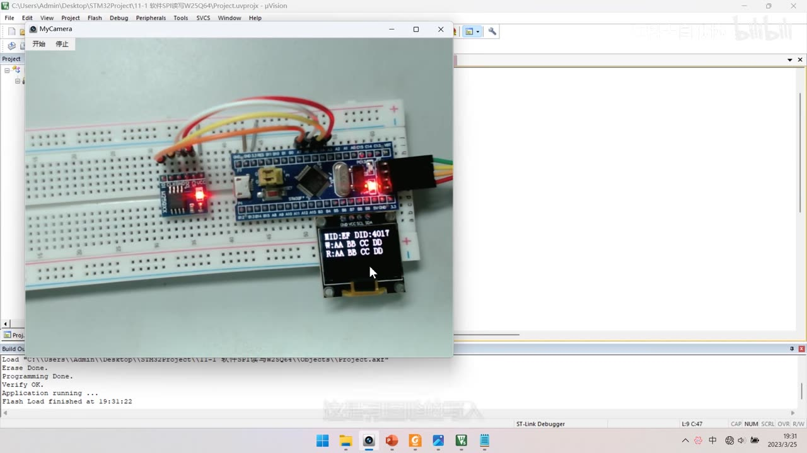
图 17：现象①（读写一致）——面包板上 OLED 显示 MID:EF DID:4017、W:AA BB CC DD、R:AA BB CC DD，写入与读出完全一致
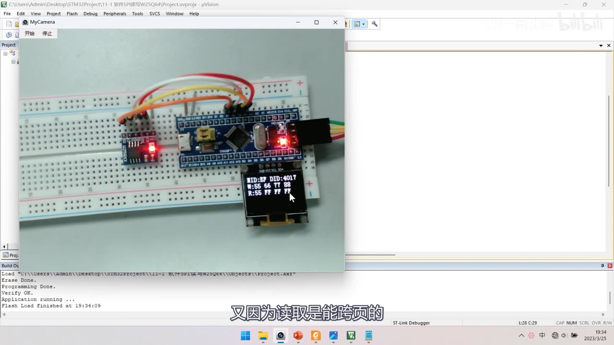
图 18：现象⑤（不能跨页写）——OLED 显示 MID:EF DID:4017、W:55 66 77 88、R:55 FF FF FF：从 0x0000FF 起写 4 字节，只有第一个字节落在页尾，后 3 个回到页首，读取跨页所以读到下一页的 FF；字幕「又因为读取是能跨页的」
坑与易错点
- DO 是从机输出：必须接主机输入、配上拉输入；CS/CLK/DI 是主机输出、配推挽输出——配错了 SPI 一点数据都收不到。
- 接线特意选 PA4～PA7（硬件 SPI1 引脚），方便以后切硬件 SPI；但也别忘了软件 SPI 里引脚号要一一对上（PA4=CS、PA5=SCK、PA6=MISO、PA7=MOSI）。
- 初始化后必须设默认电平：
W_SS(1)、W_SCK(0)（模式 0 空闲低）。 MySPI_SwapByte的顺序不能乱：模式 0 是「先放 MOSI → 拉高 SCK（移入）→ 采样 → 拉低 SCK（移出下一位）」；写反就变成别的模式。- 移位法会改掉入参：
ByteSend <<= 1之后原值就没了；如果后续还要用原数据，得用掩码法或先存副本。 - 头文件防重复包含别写错：
#ifndef/#define/#endif错了就是#1-D: unrecognized preprocessing directive+#endif ... missing两个错。 - 读 ID 先验证底层：
0x9F读回MID=EF、DID=4017才说明 SwapByte 正确，再去写其他指令。 - DID 是 2 个字节：要
<<8再|=，不能只读一个字节。 - 每次写/擦前都要写使能：
0x06只对紧跟的一条时序有效，写完自动关门；写失能不能省吗——作者的写法是把 WriteEnable 直接放进函数里。 - 写操作的指令码后面要跟 24 位地址：
>>16、>>8、Address三个字节，高位在前。 Count的类型要注意：页编程最多 256 字节，Count用 16 位；读取没有页限制，Count用 32 位。- 写入后要等 BUSY：事后等待最保险；事前等待效率高但读取前也必须等。
WaitBusy里比较要加括号：(SwapByte(...) & 0x01) == 0x01，否则优先级出错。WaitBusy可能死循环：可以加Timeout超时 break（作者说初始值 100000 左右，自己实测）。- 擦除地址最好对齐扇区：扇区地址末尾 3 位是 0；页地址末尾 2 位是页内地址。
- 写数据前必须先擦除：不擦除直接覆盖，结果 = 原数据 & 新数据（
AA→55得00）。 - 一次最多写一页且不能跨页：超页尾回卷到页首，需要自己分批次写；读取可以跨页。
W25Q64_DUMMY_BYTE是 0xFF：接收时用它占位交换数据，别用别的值（虽然理论上无所谓，但跟手册一致更稳）。
时间轴
| 时间 | 内容 |
|---|---|
| 0:02 | 本小节正式开始写 SPI 读写 W25Q64 的代码 |
| 0:07 | 本视频主要使用软件 SPI 的方式来实现 |
| 0:10 | 还是先看一下接线图 |
| 0:19 | 左边是 W25Q64 模块，插在面包板合适位置 |
| 0:25 | VCC 接到 3.3V 供电孔 |
| 0:29 | GND 接到供电孔 |
| 0:34 | 之后就是 SPI 的 4 根通信线 |
| 0:36 | CS、DO、CLK、DI |
| 0:39 | 目前是软件模拟 SPI，4 根线可接任意 GPIO |
| 0:46 | 接哪个都行，软件模拟的灵活性很高 |
| 0:51 | CS 片选接到 PA4 |
| 0:55 | DO 从机输出接到 PA6 |
| 0:59 | CLK 时钟接到 PA5 |
| 1:03 | DI 从机输入接到 PA7 |
| 1:07 | 这里的引脚并不是任意选的 |
| 1:10 | 实际接在了硬件 SPI 的引脚上 |
| 1:13 | 软件 SPI 和硬件 SPI 可以任意切换 |
| 1:17 | 接到硬件 SPI 脚上是最好的 |
| 1:21 | 只想用软件 SPI 也可以 |
| 1:25 | 下面开始在面包板上接线 |
| 1:29 | 把 W25Q64 模块插到面包板 |
| 1:37 | 用面包板跳线把 VCC 引到正极供电孔 |
| 1:43 | GND 引到负极供电孔 |
| 1:49 | 之后用飞线接 4 根通信线 |
| 1:52 | CS 接到 PA4 |
| 1:56 | DO 接到 PA6 |
| 2:04 | CLK 接到 PA5 |
| 2:10 | DI 接到 PA7 |
| 2:16 | 接线完成，然后通上电 |
| 2:19 | 模块的电源指示灯点亮 |
| 2:21 | 说明供电基本没问题 |
| 2:24 | 硬件电路完成 |
| 2:26 | 接下来回到工程目录 |
| 2:28 | 复制 OLED 显示屏的工程 |
| 2:31 | 改名叫 11-1 软件SPI读写W25Q64 |
| 2:41 | 打开工程先编译 |
| 2:55 | 准备工作完成 |
| 2:57 | 下面看程序的整体框架 |
| 3:01 | MySPI 模块：通信引脚封装、初始化 |
| 3:14 | 以及 SPI 通信的 3 个基本单元：起始、终止、交换 |
| 3:16 | 这是 SPI 通信层的内容 |
| 3:19 | 基于 SPI 层再来一个 W25Q64 的模块 |
| 3:26 | 调用底层 SPI 的单元去拼接各种指令的完整时序 |
| 3:33 | 这个模块叫 W25Q64 的硬件驱动层 |
| 3:37 | 最后在主函数里调用驱动层的函数 |
| 3:42 | 这就是程序的整体框架 |
| 3:45 | 在 Hardware 目录下建立模块，名称叫 MySPI |
| 4:00 | 先从初始化写起 MySPI_Init |
| 4:12 | 在这里初始化 SPI 的通信引脚 |
| 4:18 | 看接线图，我们使用的是 PA4 等 |
| 4:23 | 所以开启 GPIOA 的时钟 |
| 4:26 | 引脚初始化该选什么模式 |
| 4:32 | 输入引脚配置为浮空或上拉输入 |
| 4:39 | 对主机来说，时钟、主机输出、片选都是输出引脚 |
| 4:44 | 所以这 3 个脚是推挽输出模式 |
| 4:46 | 主机输入是输入引脚 |
| 4:55 | 从机的 DO 输出接主机的 PA6 |
| 5:01 | 所以 PA6 为上拉输入 |
| 5:04 | 其他 3 个为推挽输出 |
| 5:09 | 代码里 Pin_4、Pin_5、Pin_7 是推挽输出 |
| 5:17 | 初始化 GPIOA，没问题 |
| 5:30 | 这样引脚初始化就完成了 |
| 5:34 | 接下来像之前 I2C 那样，把写引脚高低电平的函数封装换名字 |
| 5:41 | 首先是从机选择 SS，这是输出引脚 |
| 5:45 | 函数叫 MySPI_W_SS |
| 5:49 | 叫 CS 也行，目前 CS 这个名字用得挺多 |
| 5:54 | 参数是 uint8_t BitValue |
| 6:04 | CS 对应的是 PA4 引脚 |
| 6:09 | 调用 GPIO_WriteBit(GPIOA, GPIO_Pin_4, ...) |
| 6:17 | 第三个参数把 BitValue 传进来，强转为 BitAction |
| 6:24 | 这条写 GPIO 的函数就换名字叫 MySPI_W_SS |
| 6:33 | 之后还有两个输出引脚 |
| 6:38 | 第二个是 SCK，第三个是 MOSI |
| 6:44 | CLK 就是 SCK，对应 PA5 |
| 6:48 | DI 就是 MOSI，对应 PA7 |
| 6:57 | 还有一个 MISO 是输入引脚 |
| 7:00 | 函数是 uint8_t MySPI_R_MISO(void) |
| 7:25 | 也可以用宏定义来完成相同的功能 |
| 7:28 | 但这里用函数包装，移植时加延时会更方便 |
| 7:36 | SPI 的速度非常快 |
| 7:42 | 这样引脚封装就完成了 |
| 7:45 | 初始化这里还要看引脚的默认电平 |
| 7:51 | 我们计划使用 SPI 模式 0 |
| 8:00 | 所以 SCK 空闲时要为低电平 |
| 8:10 | 片选 SS 默认要给高电平 |
| 8:20 | MOSI 没有明确规定的默认电平，可以不管 |
| 8:28 | MISO 是输入，不需要输出 |
| 8:40 | 下面写起始和终止 |
| 8:55 | 对照 PPT：起始是 SS 从高变低 |
| 9:05 | 终止是 SS 从低变高 |
| 9:12 | 起始信号直接把 SS 置低电平就完事了 |
| 9:25 | 终止就是把 SS 置回高电平 |
| 9:40 | 接下来是最核心的交换字节函数 |
| 10:00 | 先看模式 0 的时序图 |
| 10:20 | SS 下降沿之后先移出最高位 B7 |
| 10:40 | SCK 上升沿从机移入 B7 |
| 10:55 | SCK 下降沿移出 B6 |
| 11:05 | 下降沿是触发数据移出这个动作的条件 |
| 11:20 | 软件 SPI 里「同时发生」只能按先后顺序实现 |
| 11:40 | 所以先放 MOSI 再拉高 SCK |
| 12:00 | 开始写 SwapByte |
| 12:20 | 循环 8 次，每次处理一位 |
| 12:35 | 先写 MOSI 把最高位放上去 |
| 12:50 | 然后 ByteSend 左移一位 |
| 13:00 | 拉高 SCK 产生上升沿 |
| 13:15 | 读 MISO，如果为 1 就把最低位置 1 |
| 13:30 | 拉低 SCK 产生下降沿 |
| 13:45 | 循环完返回 ByteSend |
| 14:00 | 还有另一种掩码法的写法 |
| 14:20 | 用 (0x80 >> i) 取位和置位 |
| 14:40 | 移位法省一个变量、效率更高 |
| 15:00 | 使用哪种都可以，看你的喜好 |
| 15:20 | 作者最后保留移位法 |
| 15:40 | 接下来讲 4 种模式怎么改 |
| 15:55 | 模式 1 把 SCK(1) 提到移出数据之前 |
| 16:20 | 模式 3 是模式 1 的 SCK 极性取反 |
| 16:35 | 模式 2 是模式 0 的 SCK 极性取反 |
| 16:50 | 本代码使用模式 0 |
| 17:05 | 把 SCK 的 0 和 1 互相替换就得到模式 3 |
| 17:25 | 模式 2 同理，在模式 0 基础上把 SCK 极性取反 |
| 17:45 | 演示完撤回修改，回到最开始演示的模式 0 |
| 17:55 | 本代码使用模式 0，需要别的模式就在此基础上改 |
| 18:05 | 改相位就是把那两条代码提前，改极性就是把 SCK 取反 |
| 18:58 | SPI 通信层的代码就写完了 |
| 19:02 | 把下面这 4 个函数放到头文件声明一下 |
| 19:12 | 初始化与 3 个时序基本单元供外部调用 |
| 19:21 | 按照计划，在 SPI 通信层之上建立 W25Q64 驱动层 |
| 19:30 | 在 Hardware 右键新建 W25Q64 |
| 19:45 | 先来个初始化 void W25Q64_Init(void) |
| 19:52 | 上层的 W25Q64 模块初始化要调用底层 MySPI_Init |
| 19:59 | 先把底层初始化好，上层才能正常工作 |
| 20:03 | 调用底层函数别忘了包含 MySPI 的头文件 |
| 20:11 | W25Q64 不需要再初始化其他东西 |
| 20:15 | 所以初始化这里只需要调用 MySPI_Init |
| 20:23 | 编译看有没有问题 |
| 20:26 | 有错误，2 个 Error |
| 20:30 | 是这个地方写错了（头文件 #ifndef/#endif） |
| 20:36 | 现在没问题了，可以写业务代码了 |
| 20:40 | 也就是拼接完整时序，要参考手册 |
| 20:45 | 主要参考的部分就是指令集的表格 |
| 20:48 | 先实现获取 ID 号的时序，读出来验证底层 |
| 20:59 | 读 ID 的时序：起始、发 0x9F、连续接收 3 字节、停止 |
| 21:07 | 怎么知道哪个是交换发送、哪个是交换接收 |
| 21:12 | 圆括号括起来的就是需要我们交换接收的数据 |
| 21:33 | 连续接收的 3 个字节，第一个是厂商 ID |
| 21:39 | 设备 ID 高 8 位表示存储器类型 |
| 21:44 | ID 号的读取方法和意义就清楚了 |
| 21:47 | 回到代码写 void W25Q64_ReadID |
| 21:54 | 这个函数有两个返回值，用指针实现 |
| 21:57 | 原来的返回值不要了，写两个输出参数 |
| 22:04 | 一个是 uint8_t *MID，输出 8 位厂商 ID |
| 22:11 | 一个是 uint16_t *DID，输出 16 位设备 ID |
| 22:18 | 函数里拼接时序，先调用 MySPI_Start |
| 22:29 | 之后先交换发送 0x9F |
| 22:37 | 参数给 0x9F，返回值不要 |
| 22:47 | 这条代码就是「抛玉引砖」 |
| 22:54 | 从机收到读 ID 指令后按手册规则返回 |
| 23:02 | 第二次 SwapByte，参数随便给 |
| 23:14 | 就给个 0xFF |
| 23:28 | 换回来的是厂商 ID，存到 MID 指向的变量 |
| 23:43 | 再交换一次，收到的是设备 ID 的高 8 位 |
| 23:54 | 把返回值存到 DID 指向的变量里 |
| 24:00 | 连续调用了两个相同的函数，返回值却不同 |
| 24:12 | 因为通信是有时序的 |
| 24:23 | 第三次交换返回设备 ID 的低 8 位 |
| 24:30 | 两次读取要分别放进 DID 的高 8 位和低 8 位 |
| 24:42 | 第一次读到的数据要左移到 DID 高 8 位 |
| 24:49 | 第二次用或运算，不能直接写等于 |
| 24:53 | 这样两个 ID 号就读好了 |
| 24:57 | 最后来个 MySPI_Stop |
| 25:05 | 就是起始、交换、交换、交换、停止 |
| 25:15 | 写到现在先看看前面代码对不对 |
| 25:21 | 把这两个函数在头文件里声明 |
| 25:29 | 回到 main.c，包含 W25Q64 头文件 |
| 25:36 | 调用 W25Q64_Init |
| 25:39 | 定义两个存 ID 号的变量 MID、DID |
| 25:48 | 调用 W25Q64_ReadID，把两个变量地址传进去 |
| 26:01 | OLED 第 1 行 1 列显示 MID，长度 2 |
| 26:11 | 第 1 行 8 列显示 DID，长度 4 |
| 26:25 | 屏幕上显示了两个数 |
| 26:28 | 厂商 ID 是 EF，设备 ID 是 4017 |
| 26:32 | 对照手册看这个数对不对 |
| 26:36 | 手册上面有写 ID 号 |
| 26:40 | 其中厂商 ID 是 EF，没问题 |
| 26:44 | 用 0x9F 指令读出来是 4017，也没问题 |
| 26:47 | 说明程序写到这里现象都符合预期 |
| 26:52 | 万一不能正确读取 ID 号 |
| 27:00 | 要先确保之前的代码没问题 |
| 27:03 | 再往后写，心里才有底 |
| 27:06 | 继续写程序：把指令集里标黄的指令实现出来 |
| 27:18 | 如果总在程序里直接写数字，意义不明显 |
| 27:23 | 别人看不出 9F 到底代表啥意思 |
| 27:28 | 所以像 MPU6050 寄存器地址那样 |
| 27:32 | 把每个指令码都用宏定义替换 |
| 27:41 | 名字叫作 W25Q64_Ins |
| 27:45 | 存放在 Hardware 文件夹里 |
| 27:54 | 里面可以根据手册对照 |
| 28:01 | 这里是提前写好的，就是这个样子 |
| 28:09 | 用 define 把每个指令名称替换为对应指令码 |
| 28:10 | 全选复制过来 |
| 28:13 | 这样指令替换就做好了 |
| 28:16 | 依次对应指令表里的每个指令 |
| 28:20 | 另外还定义了 DUMMY_BYTE，表示 0xFF |
| 28:22 | 就是接收时交换过去的无用数据 |
| 28:31 | 先编译，没问题 |
| 28:33 | 在 W25Q64.c 里 include 这个头文件 |
| 28:41 | 之后把纯数字替换为对应的宏 |
| 28:50 | 比如 JEDEC_ID |
| 29:02 | 0xFF 换成 DUMMY_BYTE |
| 29:11 | 接下来依次实现每个指令的时序 |
| 29:15 | 首先是 Write Enable 写使能 |
| 29:19 | 指令码 0x06 就行了 |
| 29:24 | 定义函数 void W25Q64_WriteEnable(void) |
| 29:34 | 第一步 Start 起始 |
| 29:41 | 第二步交换发送 WRITE_ENABLE |
| 29:51 | 这条指令后续不需要跟任何数据 |
| 29:54 | 所以直接 Stop 就完成了 |
| 30:03 | 继续写等待 BUSY 的函数 |
| 30:14 | 判断芯片是不是忙状态 |
| 30:17 | 状态寄存器 1 每一位的定义前面有说明 |
| 30:21 | 我们要读取它的最低位 BUSY |
| 30:29 | 写一个等待 BUSY 为 0 的函数 |
| 30:36 | BUSY 为 1 就进入等待 |
| 30:49 | 起始后先发送指令码，再接收状态寄存器 |
| 31:00 | 状态寄存器可以被连续读出 |
| 31:09 | 这个特性方便我们执行等待的功能 |
| 31:11 | 在这里来个函数 void W25Q64_WaitBusy(void) |
| 31:25 | 先 Start，然后发送读状态寄存器 1 |
| 31:36 | 随后发送 DUMMY_BYTE 接收数据 |
| 31:42 | 用掩码取出最低位 |
| 31:47 | 如果等于 0x01 就是 BUSY 为 1 |
| 31:52 | 这时进入 while 死循环等待 |
| 31:57 | 前面的计算套个括号避免优先级问题 |
| 32:08 | 直到 BUSY 为 0 跳出循环 |
| 32:11 | 就是利用连续读出状态寄存器实现等待 |
| 32:16 | 最后来个 Stop |
| 32:18 | 如果觉得死循环会导致卡死 |
| 32:27 | 可以来个 uint32_t Timeout |
| 32:36 | 初始值给大一点，比如 100000 |
| 32:43 | 在 while 循环里 Timeout-- |
| 32:52 | 减到 0 就 break，超时退出 |
| 32:54 | break 之前也可以跳到错误处理函数 |
| 33:03 | 调用这个函数，不忙就很快退出 |
| 33:13 | 下面来写页编程的函数 |
| 33:17 | 格式是先发指令码 0x02 |
| 33:22 | 最后发数据，数据是发送方向的 |
| 33:40 | 先发指令，再连发 3 个字节地址 |
| 33:53 | 如果继续发就会覆盖后面的 DataByte |
| 34:01 | 定义 void W25Q64_PageProgram |
| 34:09 | 参数第一个是 uint32_t Address |
| 34:12 | C 语言没有 24 位数据类型 |
| 34:35 | 数组要通过指针传递 |
| 34:50 | 一次写入数量范围是 0～256 |
| 34:54 | 所以 Count 要定义为 16 位 |
| 35:04 | 函数内部拼接时序 |
| 35:06 | 先 Start，再发送 PAGE_PROGRAM |
| 35:24 | 地址是高位字节先发送 |
| 35:32 | 第一个字节把 Address 右移 16 位 |
| 35:45 | 第二个字节把 Address 右移 8 位 |
| 36:03 | 第三次直接把 Address 放进来 |
| 36:17 | 这样连续发送 24 位地址就完成了 |
| 36:25 | 再复制一次交换发送 |
| 36:46 | 定义变量 uint16_t i |
| 36:50 | for (i = 0; i < Count; i ++) 逐字节写 |
| 37:10 | 最后写完来个 Stop |
| 37:16 | 调用这个函数就能帮我们写入数据 |
| 37:25 | 接下来实现擦除的功能 |
| 37:45 | 擦除指定地址所在的整个扇区 |
| 38:02 | 先起始，发送指令 |
| 38:14 | 之后指定地址，直接复制那三条 |
| 38:19 | 最后停止，这个函数就完成了 |
| 38:23 | 调用这个函数，地址所在扇区会被擦除 |
| 38:29 | 读 ID 的已经写过了 |
| 38:40 | 它返回的数据是无用数据 |
| 38:46 | 有的情况是为内部电路延时做准备 |
| 39:10 | 最后一个指令是 ReadData |
| 39:14 | 流程是交换发送 0x03，再发送 3 个字节地址 |
| 39:36 | 接收时 DI 的波形是 XXX |
| 39:48 | 读取没有 256 字节的限制 |
| 39:56 | 定义 void W25Q64_ReadData |
| 40:04 | 参数和前面类似 |
| 40:10 | 读数据的数组是输出参数 |
| 40:21 | 读取的 Count |
| 40:27 | 改成 32 位的类型 |
| 40:33 | 函数内容和之前的一段一样，复制过来 |
| 40:44 | 之后开始发送指令 READ_DATA |
| 40:54 | 之后指定 24 位地址 |
| 41:02 | 然后根据协议开始读 |
| 41:07 | 发送 0xFF 置换回有用的数据 |
| 41:13 | 返回值放到 DataArray 的第 0 个位置 |
| 41:26 | 每次交换读取后，芯片内部指针自动自增 |
| 41:43 | 套 for 循环读 Count 次 |
| 42:04 | 读完之后来个 Stop |
| 42:10 | 调用这个函数就能帮我们读取数据 |
| 42:23 | 编译看，0 Error 0 Warning |
| 42:27 | 时序写完之后还可以做一项工作 |
| 42:33 | 就是 PPT 这里的第一条注意事项 |
| 42:42 | 涉及写入的时序有扇区擦除和页编程 |
| 42:57 | 把写使能复制到扇区擦除前面 |
| 43:05 | 页编程前面也自带写使能 |
| 43:16 | 写使能仅对之后跟随的一条时序有效 |
| 43:25 | 写完之后就不用再写失能了 |
| 43:30 | 接下来是写入操作结束后进入忙状态 |
| 43:40 | 事前等待还是事后等待的考虑 |
| 43:46 | 每次写入后都等 BUSY 清零再退出 |
| 43:54 | 写入后立刻等待，不忙了再退出 |
| 43:57 | 也可以选择事前等待 |
| 44:14 | 写入后不等，每次操作之前再等 |
| 44:19 | 两者区别：事后等待最保险 |
| 44:25 | 事前等待效率会更高 |
| 44:42 | 事后等待只需在写入操作之后调用 |
| 44:50 | 忙的时候读取也是不行的 |
| 45:04 | 这里就选择事后等待 |
| 45:08 | 页编程之后执行等待 |
| 45:13 | 扇区擦除也来个事后等待 |
| 45:16 | 读取数据时事前事后都不用等待 |
| 45:23 | 所以调用 ReadData 时肯定不会忙 |
| 45:26 | 整个驱动模块就写好了 |
| 45:46 | 最后到主函数来执行测试 |
| 45:48 | 先定义两个数组 |
| 45:57 | ArrayWrite 给 4 个数 0x01～0x04 |
| 46:07 | 再来一个数组 ArrayRead |
| 46:17 | OLED 第 1 行显示 MID 和 DID |
| 46:31 | 第 2 行显示 W: |
| 46:36 | 第 3 行显示 R: |
| 46:42 | MID 放在 5 列、DID 放在 12 列 |
| 46:49 | 下载看现象 |
| 46:57 | 执行写入测试：在 00 位置开始写 |
| 47:02 | 写之前先调用 SectorErase |
| 47:08 | 参数给 0x000000 |
| 47:13 | 地址最好对齐到扇区的起始地址 |
| 47:23 | 回想扇区地址的规律 |
| 47:49 | 擦除之后开始写入 |
| 47:53 | 调用 PageProgram |
| 47:56 | 起始地址给 0x000000 |
| 48:08 | 写入完成，再给他读出来 |
| 48:12 | 起始地址给 0x000000 |
| 48:42 | 6 列显示 ArrayWrite[1]、9 列 [2]、12 列 [3] |
| 48:59 | 把 ArrayWrite 改成 ArrayRead |
| 49:07 | 读取的数据应该也是 01 02 03 04 |
| 49:13 | 编译下载看 |
| 49:19 | 第 2 行写入 1、2、3、4 |
| 49:21 | 第 3 行读取也是 1、2、3、4 |
| 49:27 | 改成 A1、B2、C3、D4 再下载 |
| 49:42 | 读回 A1、B2、C3、D4，读写没问题 |
| 49:46 | 验证掉电不丢失 |
| 49:49 | 把擦除和写入两条代码注释掉 |
| 50:04 | 读取的仍然是 A1 等数据 |
| 50:08 | 说明数据是掉电不丢失的 |
| 50:11 | 验证擦除之后变 FF 的特性 |
| 50:17 | 解除擦除的注释，只擦除不写入 |
| 50:26 | 读取的数据全是 F |
| 50:28 | 说明擦除之后变为 FF |
| 50:31 | 验证只能 1 写 0 |
| 50:38 | 先写入 AA、BB、CC、DD |
| 50:48 | 有擦除的写入，写什么读什么 |
| 50:55 | 注释掉擦除，直接改写 |
| 51:04 | 改写为 55、66、77、88 |
| 51:17 | 写入 55、66、77、88 |
| 51:21 | 读出的却是 00、22、44、88 |
| 51:26 | AA 改写 55 为什么变成 00，前面解释过 |
| 51:32 | 后面 3 个数据留给读者验证 |
| 51:37 | 不执行擦除时，读出数据 = 原始数据 & 写入数据 |
| 51:45 | 通过这个实验知道写入前必须擦除 |
| 51:54 | 验证写入数据不能跨页的现象 |
| 52:02 | 回顾页地址的规律 |
| 52:04 | 页地址范围是 xxxx00～xxxxFF |
| 52:09 | 最后两个十六进制数是页内地址 |
| 52:16 | 给最后两位 FF |
| 52:24 | 看看能不能成功跨页到下一页 |
| 52:33 | 之后读取数据也从 FF 开始读 |
| 52:38 | 写入 55、66、77、88 |
| 52:40 | 读出的却是 55、FF、FF、FF |
| 52:48 | 说明写入并没有跨页 |
| 52:50 | 55 写入到地址 0FF |
| 52:58 | 又因为读取是能跨页的 |
| 53:08 | 第二页起始位置 00 |
| 53:18 | 编译下载看 |
| 53:22 | 果然这 3 个字节在第二页 |
| 53:25 | 画个图表示 |
| 53:36 | 页开始 00、页结尾 FF、第二页开始 100 |
| 53:44 | 从 FF 开始连续写 4 个字节 |
| 53:58 | 不能按地址连续写到 100 里，只能回页首 |
| 54:12 | 这就是页编程的注意事项 |
| 54:18 | 跨页写只能自己在软件上处理 |
| 54:22 | 算清数组总共跨多少页 |
| 54:25 | 然后分批次写 |
| 54:30 | 本小节代码部分到这里就结束了 |
| 54:50 | 下一小节学习 STM32 的硬件 SPI 外设 |
| 55:00 | 用硬件 SPI 实现同样的功能 |
存疑
- 本集文本来自画面硬字幕的 OCR（PP-OCRv4，source=subtitle-ocr，953 段），不是 ASR。错字主要是
SPI→ 「SPL/SPl」（5 处）、MySPI→ 「MvSPI/MvSPl」（10 处）、Byte→ 「Bvte」（23 处）、读取→ 「卖取」、引脚→ 「引I脚」、死循环→ 「盾环」（各 1 处）；并混入编译/下载输出（Objects\Project.axf、Flash Load finished at …）与行首噪声——已按画面/上下文校正。 MySPI_Init两段分在两帧：图 2 只到推挽输出段（GPIO_Init(GPIOA, …)），图 3 才补出 IPU 段（Pin_6）；而MySPI_W_SS(1)、MySPI_W_SCK(0)这两行默认电平只在口述 7:45–8:40 讲过、帧内未单独确认——代码块按位置补全并已标注。SwapByte两种写法都在视频里演示过：掩码法（ByteSend & (0x80 >> i)/ByteReceive |= (0x80 >> i)）只在口述 + 上方残留代码里出现，帧内完整落地的是移位法——本笔记以移位法为准，掩码法作对照说明。W25Q64_WaitBusy的Timeout是否真的加进最终代码未确认：口述 24:40–25:15 讲「怕死循环可以加Timeout = 100000+break」，但代码帧里只看到 while 循环本身——笔记按「可选增强」写，并注明未确认。WriteEnable与WaitBusy是分两次加入的：一开始PageProgram/SectorErase里没有WriteEnable（后补进去的，图 13 的W25Q64_WriteEnable();是补入后的状态），WaitBusy也是后来讨论完「事后等待」才补到PageProgram/SectorErase末尾——顺序上先有指令时序、后加封装。- 「不擦除覆盖改写」的现象数据来自口述 + 演示：
AA BB CC DD直接改写成55 66 77 88，读回00 22 44 88，作者说「读出的数据 = 原始数据 & 写入的数据」；00可用「1 只能改 0」解释，后 3 个22 44 88作者留给读者自己验证——笔记照写并注明这是作者给出的解释。 - 跨页实验的起始地址是
0x0000FF（页的最后 1 字节），读回55 FF FF FF；作者口述中「第二页起始位置 00」指0x000100所在的页首。 W25Q64_Ins.h里定义了全部指令集宏（含 Quad/Fast Read 系列），本课程实际只用0x06/0x05/0x02/0x20/0x03/0x9F六个 +DUMMY_BYTE 0xFF——笔记只列这 7 个，其余不展开。- 帧间隔 13 秒，个别代码行（如
WaitBusy的 while 循环体、ReadData的 for 循环体）未完整落帧，引用时以口述 + 相邻帧为准。 - 片尾 54:30「下一小节学习 STM32 硬件 SPI 外设」——没有点名工程编号；按课程顺序硬件 SPI 代码在 [11-4]。